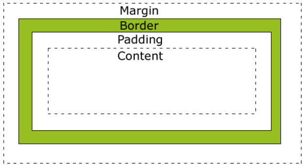
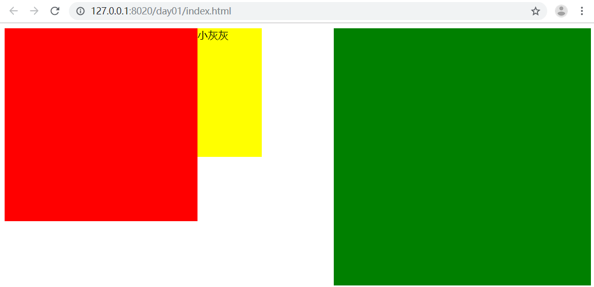

在CSS中，"box model"这一术语是用来设计和布局时使用，然后在网页中基本上都会显示一些方方正正的盒子。我们称为这种盒子叫盒模型。
盒模型有两种：标准模型和IE模型。我们在这里重点讲标准模型。

width：内容的宽度
height: 内容的高度
padding：内边距，边框到内容的距离，padding的区域是有背景颜色的。并且背景颜色和内容的颜色一样。也就是说background-color这个属性将填充所有的border以内的区域
border: 边框，就是指的盒子的宽度
margin：外边距，盒子边框到附近最近盒子的距离
如果一个盒子设置了padding，border，width，height
盒子的真实宽度=width+2*padding+2*border
盒子的真实高度=height+2*padding+2*border
如果要保持盒子真实的宽度，那么加padding就一定要减width，减padding就一定要加width。
padding有四个方向，分别描述4个方向的padding。描述的方法有两种。
1.写小属性，分别设置不同方向的padding
padding-top: 30px;
padding-right: 30px;
padding-bottom: 30px;
padding-left: 30px;2.写综合属性，空格隔开
/*上 右 下 左*/
padding: 20px 30px 40px 50px ;
/*上 左右 下*/
padding: 20px 30px 40px;
/* 上下 左右*/
padding: 20px 30px;
/*上下左右*/
padding: 20px;标签的默认padding
比如ul，ol标签，有默认的padding-left值。
那么我们一般在写网页的时候，是要清除页面标签中默认的padding和margin。以便于我们更好的去调整元素的位置。
通配符选择器：
*{
padding:0;
margin:0;
}但这种方法效率不高。所以我们要使用并集选择器来选中页面中应有的标签。(但是有人给我们写好了这些清除默认的样式表，reset.css)。
border:边框的意思，描述盒子的边框。
边框有三个要素： 粗细、线性样式、颜色。（如不写颜色默认为黑色。如不写粗细不显示边框。只写线性样式，默认有上下左右 3px宽度的实体黑色边框。）
按照三要素来写baoder：
border-width: 3px;
border-style: solid;
border-color: red;
/*
border-width: 5px 10px;
border-style: solid dotted double dashed;
border-color: red green yellow;
*/
/*设置顺序 ：上 右 左 下*/
/*border-style: 实线，点状，双线，虚线*/按照方向划分设置小属性：
border-top-width: 10px;
border-top-color: red;
border-top-style: solid;
border-right-width: 10px;
border-right-color: red;
border-right-style: solid;
border-bottom-width: 10px;
border-bottom-color: red;
border-bottom-style: solid;
border-left-width: 10px;
border-left-color: red;
border-left-style:solid;按照方向设置：
border-top: 10px solid red;
border-right: 10px solid red;
border-bottom: 10px solid red;
border-left: 10pxb solid red;取消border样式：
border:none；
border：0；border-radius属性：
<!DOCTYPE html>
<html lang="en">
<head>
<meta charset="UTF-8">
<title>Title</title>
<style>
div.box1{
width: 200px;
height: 200px;
border-radius: 20px;
background-color: #f0809d;
}
div.box2{
width: 200px;
height: 200px;
border-radius: 100px;
background-color: #7ef0c2;
}
div.box3{
width: 200px;
height: 200px;
border-top-left-radius: 200px;
border-top-right-radius: 200px;
border-bottom-right-radius: 20px;
border-bottom-left-radius: 20px;
background-color: #b589f0;
}
</style>
</head>
<body>
<div class="box1"></div>
<div class="box2"></div>
<div class="box3"></div>
</body>
</html>margin：外边距的意思。表示边框到最近盒子的距离。
设置margin：
/*表示四个方向的外边距离为20px*/
margin: 20px;
/*表示盒子向下移动了30px*/
margin-top: 30px;
/*表示盒子向右移动了50px*/
margin-left: 50px;
/*表示盒子距离右面的盒子100px*/
margin-right: 100px;
/*表示盒子距离下面的盒子100px*/
margin-bottom: 100px;margin的塌陷：
html:
<div class="father">
<div class="box1"></div>
<div class="box2"></div>
</div>
css:
*{
padding: 0;
margin: 0;
}
.father{
width: 400px;
border: 1px solid gray;
/*float: left;*/
}
.box1{
width: 300px;
height: 200px;
background-color: red;
margin-bottom: 20px;
/*float: left;*/
}
.box2{
width: 400px;
height: 300px;
background-color: green;
margin-top: 50px;
/*float: left;*/
}div{
width: 780px;
height: 50px;
background-color: red;
/*水平居中盒子*/
margin: 0px auto;
/*水平居中文字*/
text-align: center;
}
/*当一个div元素设置margin：0 auto;时就会居中盒子，那我们知道margin:0 auto;表示上下外边距离为0，左右为auto的距离，那么auto是什么意思呢？
设置margin-left:auto；我们发现盒子尽可能远离左侧，当设置margin-right:auto；我们发现盒子尽可能远离右侧。当两条语句并存的时候，我们发现盒子尽可能远离两侧，此时盒子就居中了。
如果给盒子设置浮动，那么margin:0 auto失效。
使用margin：0 auto;注意点：
1.使用margin: 0 auto;水平居中盒子必须有width，要有明确width，文字水平居中使用text-align: center;
2.只有标准流下的盒子 才能使用margin:0 auto;
当一个盒子浮动了，固定定位，绝对定位(后面会讲)，margin:0 auto; 不能用了
3.margin：0 auto;居中盒子。而不是居中文本，文字水平居中使用text-align: center;
*/在以前的HTML知识中，我们已经将标签分过类，当时分为了：文本级、容器级。
我们也学习了行内元素和块级元素的分类，其实这种分类方式是从CSS的角度讲的。
行内元素：
与其他行内元素并排。
不能设置宽、高。默认的宽度，就是文字的宽度。
块级元素：
霸占一行，不能与其他任何元素并列。
能接受宽、高。如果不设置宽度，那么宽度将默认变为父亲的100%。
我们可以通过display属性将块级元素和行内元素进行相互转换。display即“显示模式”。
给一个块级元素（比如div）设置：
display: inline;那么，这个标签将立即变为行内元素，此时它和一个span无异。inline就是“行内”。也就是说：
此时这个div不能设置宽度、高度。
此时这个div可以和别人并排了。
给一个行内元素（比如span）设置：
display: block;那么，这个标签将立即变为块级元素，此时它和一个div无异。block”是“块”的意思。也就是说：
此时这个span能够设置宽度、高度。
此时这个span必须霸占一行了，别人无法和他并排。
如果不设置宽度，将撑满父亲。
标准流里面的限制非常多，导致很多页面效果无法实现。如果我们现在就要并排、并且就要设置宽高，那该怎么办呢？办法是：移民！脱离标准流！
css中一共有三种手段，使一个元素脱离标准文档流：
（1）浮动
（2）绝对定位
（3）固定定位
浮动是css里面布局最多的一个属性，也是很重要的一个属性。
float：表示浮动的意思。它有三个值。
none: 表示不浮动，默认
left: 表示左浮动
right：表示右浮动
例子：
html:
<div class="box1"></div>
<div class="box2"></div>
<span>小灰灰</span>
css:
.box1{
width: 300px;
height: 300px;
background-color: red;
float:left;
}
.box2{
width: 400px;
height: 400px;
background-color: green;
float:right;
}
span{
float: left;
width: 100px;
height: 200px;
background-color: yellow;
}
我们会发现，三个元素并排显示，.box1和span因为是左浮动，紧挨在一起，这种现象贴边。.box2盒子因为右浮动，所以紧靠着右边。
1.浮动的元素会脱离标准文档流
2.浮动的元素互相贴靠
3.浮动的元素有"子围"效果
4.收缩的效果
脱标：就是脱离了标准文档流。
例子：
html
<div class="box1">小红</div>
<div class="box2">小黄</div>
<span>小马哥</span>
<span>小马哥</span>
css:
.box1{
width: 200px;
height: 200px;
background-color: red;
float: left;
}
.box2{
width: 400px;
height: 400px;
background-color: yellow;
}
span{
background-color: green;
float: left;
width: 300px;
height: 50px;
}效果：红色盒子压盖住了黄色的盒子，一个行内的span标签竟然能够设置宽高了。
说明1：小红设置了浮动，小黄没有设置浮动，小红脱离了标准文档流，其实就是它不在页面中占位置了，此时浏览器认为小黄是标准文档流中的第一个盒子。所以就渲染到了页面中的第一个位置上。这种现象，也有一种叫法，浮动元素“飘起来了”，但我不建议大家这样叫。
说明2：所有的标签一旦设置浮动，就能够并排，并且都不区分行内、块状元素，都能够设置宽高。
例子：
html：
<div class="box1">1</div>
<div class="box2">2</div>
<div class="box3">3</div>
css：
.box1{
width: 100px;
height: 400px;
float: left;
background-color: red;
}
.box2{
width: 150px;
height: 450px;
float: left;
background-color: yellow;
}
.box3{
width: 300px;
height: 300px;
float: left;
background-color: green;
}效果发现：
如果父元素有足够的空间，那么3哥紧靠着2哥，2哥紧靠着1哥，1哥靠着边。
如果没有足够的空间，那么就会靠着1哥，如果再没有足够的空间靠着1哥，自己往边靠。
html：
<div>
<img src="./images/企业1.png" alt="">
</div>
<p>
123小灰灰小灰灰小灰灰小灰灰小灰灰小灰灰小灰灰小灰灰小灰灰小灰灰小灰灰小灰灰小灰灰小灰灰小灰灰小灰灰小灰灰小灰灰小灰灰小灰灰小灰灰小灰灰小灰灰小灰灰小灰灰小灰灰小灰灰小灰灰小灰灰小灰灰小灰灰小灰灰小灰灰小灰灰小灰灰小灰灰小灰灰小灰灰小灰灰小灰灰小灰灰小灰灰小灰灰小灰灰小灰灰小灰灰小灰灰小灰灰小灰灰小灰灰小灰灰小灰灰小灰灰小灰灰小灰灰小灰灰
</p>
css：
*{
padding: 0;
margin: 0;
}
div{
float: left;
}
p{
background-color: #666;
}效果发现：所谓字围效果，当div浮动，p不浮动，div遮盖住了p，div的层级提高，但是p中的文字不会被遮盖，此时就形成了字围效果。
收缩：一个浮动元素。如果没有设置width，那么就自动收缩为文字的宽度（这点跟行内元素很像）。
例子：
html：
<div>
alex
</div>
css：
div{
float: left;
background-color: red;
}大家一定要谨记：关于浮动，我们初期一定要遵循一个原则，永远不是一个盒子单独浮动，要浮动就要一起浮动。另外，有浮动，一定要清除浮动，
在页面布局的时候，每个结构中的父元素的高度，我们一般不会设置。（为什么？）
大家想，如果我第一版的页面的写完了，感觉非常爽，突然隔了一个月，老板说页面某一块的区域，我要加点内容，或者我觉得图片要缩小一下。这样的需求在工作中非常常见的。真想打他啊。那么此时作为一个前端小白，肯定是去每个地方加内容，改图片，然后修改父盒子的高度。那问题来了，这样不影响开发效率吗？答案是肯定的。
例子：
html:
<div class="father">
<div class="box1"></div>
<div class="box2"></div>
<div class="box3"></div>
</div>
<div class="father2"></div>
css：
*{
padding: 0;
margin: 0;
}
.father{
width: 1126px;
/*子元素浮动 父盒子一般不设置高度*/
/*出现这种问题，我们要清除浮动带来影响*/
/*height: 300px;*/
}
.box1{
width: 200px;
height: 500px;
float: left;
background-color: red;
}
.box2{
width: 300px;
height: 200px;
float: left;
background-color: green;
}
.box3{
width: 400px;
float: left;
height: 100px;
background-color: blue;
}
.father2{
width: 1126px;
height: 600px;
background-color: purple;
}效果发现：如果不给父盒子一个高度，那么浮动子元素是不会填充父盒子的高度，那么此时.father2的盒子就会跑到第一个位置上，影响页面布局。
那么我们知道，浮动元素确实能实现我们页面元素并排的效果，这是它的好处，同时它还带来了页面布局极大的错乱！所以我们要清除浮动。
这个方法给大家上个代码介绍，它的使用不灵活，一般会常用页面中固定高度的，并且子元素并排显示的布局。比如：导航栏。
clear：意思就是清除的意思。
有三个值：
left：当前元素左边不允许有浮动元素。
right：当前元素右边不允许有浮动元素。
both：当前元素左右两边不允许有浮动元素。
给浮动元素的后面加一个空的div，并且该元素不浮动，然后设置clear：both。
例子：
html:
<div>
<ul>
<li>Python</li>
<li>web</li>
<li>linux</li>
<!-- 给浮动元素最后面加一个空的div 并且该元素不浮动 ，然后设置clear:both 清除别人对我的浮动影响-->
<!-- 内墙法 -->
<!-- 无缘无故加了div元素 结构冗余 -->
<div class="clear"></div>
</ul>
</div>
<div class="box">
</div>
css：
*{
padding: 0;
margin: 0;
}
ul{
list-style: none;
}
div{
width: 400px;
}
div ul li {
float: left;
width: 100px;
height: 40px;
background-color: red;
}
.box{
width: 200px;
height: 100px;
background-color: yellow;
}
.clear{
clear: both;
}给浮动子元素的父盒子，也就是不浮动元素，添加一个clearfix的类，然后设置。
.clearfix:after{
/*必须要写这三句话*/
content: '.';
clear: both;
display: block;
}overflow属性规定当内容溢出元素框时发生的事情。
说明：
这个属性定义溢出元素内容区的内容会如何处理。如果值为 scroll，不论是否需要，用户代理都会提供一种滚动机制。因此，有可能即使元素框中可以放下所有内容也会出现滚动条。
有五个值：
visible：默认值。内容不会被修剪，会呈现在元素框之外。
hidden：内容会被修剪，并且其余内容是不可见的。
scroll：内容会被修剪，但是浏览器会显示滚动条以便查看其余的内容。
auto：如果内容被修剪，则浏览器会显示滚动条以便查看其余的内容。
inherit：规定应该从父元素继承 overflow 属性的值。